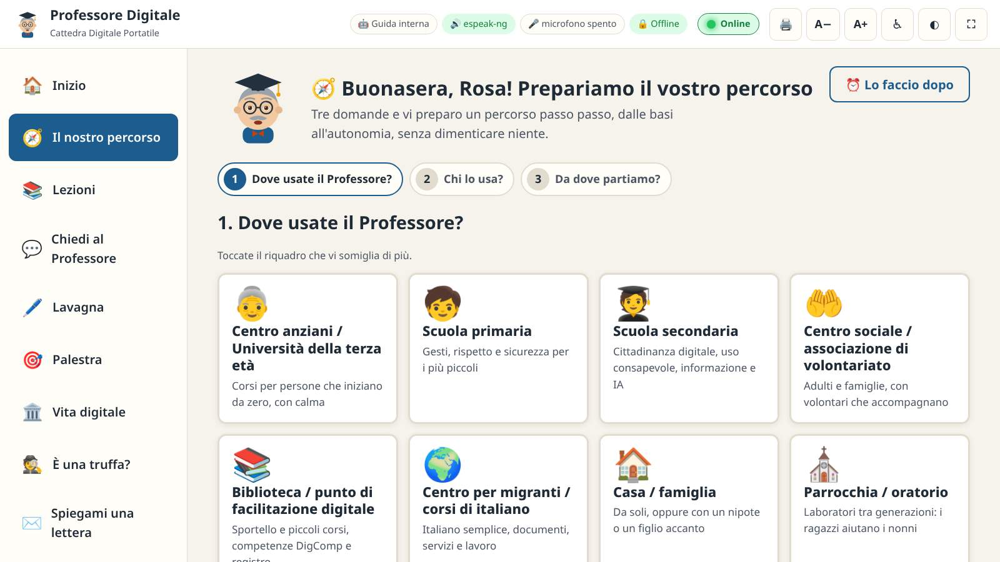
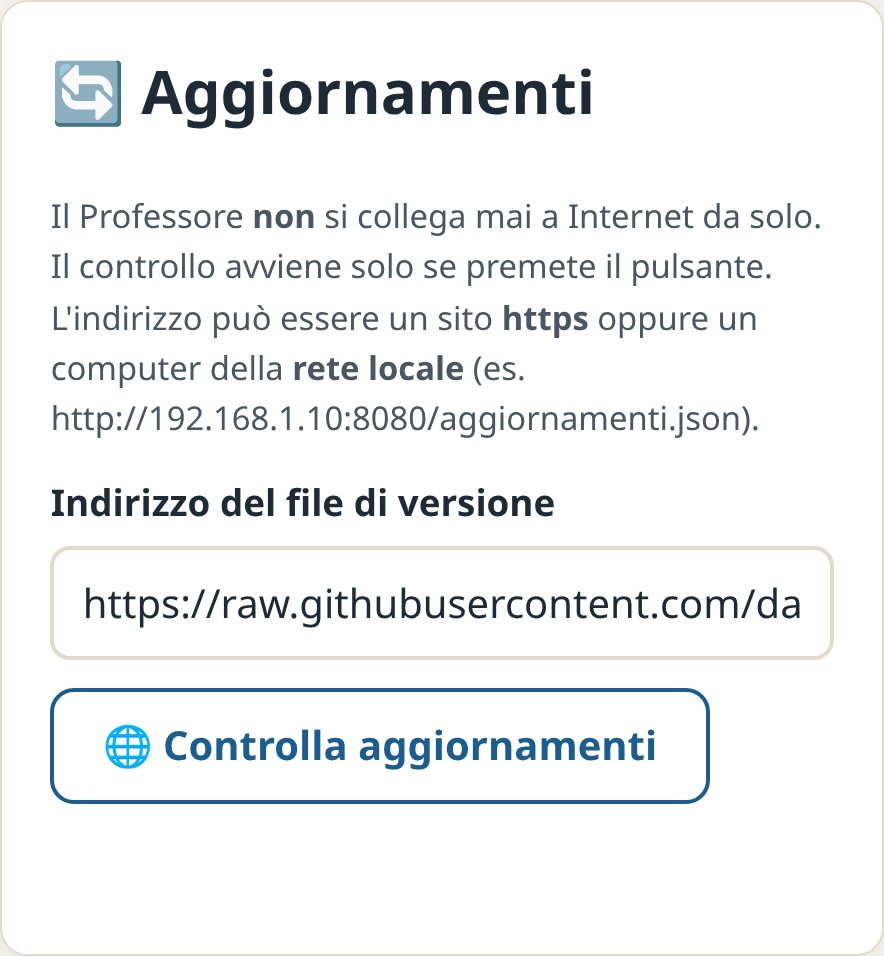

Installare e aggiornare alla versione 3.5.0 · passo dopo passo
Un aggiornamento sereno, senza perdere nulla.
Linux · Windows da XP a 11 · Chiavetta · Aule e firewall Telefoni e tablet · Comandi pronti da copiare · Controlli finali Problemi frequenti e soluzioni
Per tutti gli utentiLinux Debian · Ubuntu · Mint · FeniceOSWindows XP · 7 · 8 · 10 · 11I progressi restano al loro posto
Danilo D'AuriaIdeazione e sviluppo · Tecnico IT & Divulgatore Digitale per il Sociale
v3.5.0Ottobre 2026
Come usare questo libretto
Questo libretto spiega come installare per la prima volta il Professore Digitale 3.5.0 e come aggiornare una versione già presente,
su computer Linux e Windows. Non serve leggerlo tutto: trovate il vostro caso nella tabella e andate al capitolo indicato.
Il vostro caso
Capitolo
LINUX Ho già il Professore (2.0, 2.1, 2.2, 2.3, 3.0, 3.1, 3.2, 3.3 o 3.4) e voglio la 3.5.0
2 · Aggiornare su Linux
LINUX Non ho mai installato il Professore
3 · Prima installazione su Linux
WINDOWS Voglio il Professore sul mio PC Windows (anche se ho già la 2.3, la 3.0, la 3.1, la 3.2, la 3.3 o la 3.4)
4 · Installare su Windows
WINDOWS Ho la 2.3, la 3.0, la 3.1, la 3.2, la 3.3 o la 3.4 e voglio la 3.5.0, o arriverà una versione nuova
5 · Aggiornare su Windows
WINDOWS «Sicurezza di Windows» blocca l'installatore
4 · Se Sicurezza di Windows blocca l'installatore
AULE Devo preparare molti computer, anche senza Internet, il quadro dell'aula e i tablet
6 · Molti computer, chiavetta e aula
TUTTI Voglio provarlo senza installare nulla, o usarlo sul telefono
7 · Portatile, chiavetta e telefono
TUTTI Ho installato: funziona tutto?
8 · I controlli finali
TUTTI Qualcosa non va
9 · Problemi frequenti
ConvenzioniLINUX i comandi si scrivono nel Terminale. WINDOWS i comandi si scrivono nel Prompt dei comandi.
I comandi sono in carattere a macchina: si possono copiare e incollare. Le righe che iniziano con # sono spiegazioni e non vanno scritte.
I tasti sono indicati così: Invio, Ctrl + C. I riquadri verdi contengono consigli, quelli gialli attenzioni.
La promessa più importanteAggiornare non cancella nulla: progressi degli allievi, impostazioni, conversazioni,
contenuti aggiunti, intelligenza artificiale e microfono già configurati restano al loro posto, perché stanno nella cartella personale di ogni utente e non in quella del programma.
Non serve disinstallare la versione precedente.
Indice
1Prima di iniziareCosa c'è di nuovo, i file, l'impronta di controllo
2Aggiornare su LinuxDal Professore, dal terminale o con il doppio clic
3Prima installazione su LinuxInstallare e attivare IA, microfono e voce
4Installare su WindowsDa Windows XP a Windows 11, per tutti o solo per me, se Sicurezza di Windows blocca
5Aggiornare su WindowsDalla 2.3, 3.0, 3.1, 3.2, 3.3 o 3.4 alla 3.5.0 e alle versioni successive
6Molti computer, chiavetta e aulaAule, centri, PC senza Internet, firewall per il quadro dell'aula e per i tablet
7Versione portatile, chiavetta e telefonoUsare il Professore senza installarlo, anche sul telefono e sul tablet
WINDOWS doppio clic su ProfessoreDigitale-Setup-3.5.0.exe → se compare l'avviso blu: Ulteriori informazioni → Esegui comunque → Avanti fino a Fine. Se Windows 11 lo blocca del tutto: capitolo 4, «Se Sicurezza di Windows blocca l'installatore».
§§c1§§
1
CAPITOLO
Prima di iniziare
Bastano pochi minuti e nessuna competenza particolare. Leggete questa pagina una volta: vi evita le sorprese più comuni.
Cosa c'è di nuovo nella 3.5.0

Figura 1.«🧭 Il nostro percorso», la novità principale della 3.5.0:
alla prima apertura il Professore chiede dove viene usato, chi lo usa e da dove si parte.
🧭 Il nostro percorso: alla prima apertura una maschera in tre passi chiede dove si usa il Professore (12 contesti: centro anziani, scuola primaria e
secondaria, centro sociale, biblioteca, centro per migranti, casa, parrocchia, RSA, Comune, centro per l'impiego, altro), chi lo usa e da dove si parte
(8 domande). Ne nasce un percorso passo passo in 8 fasi uguali per tutti, dalla fiducia all'autonomia, in cui la sicurezza non si salta mai:
la pagina «Continua da qui» indica la prossima tappa, le attività si spuntano da sole (o a mano quelle in presenza) e il programma si stampa per l'ente.
Si può cambiare contesto senza perdere i progressi (Vademecum, capitolo 5).
🔊 La voce sui telefoni: i telefoni non lasciano parlare una pagina prima di un tocco; ora compare l'invito «👋 Toccate qui per cominciare» e il Professore parla.
🎤 «Parla con la voce» nell'app per telefono e tablet: le domande a voce con il riconoscimento vocale del telefono. È spento di base: prima di accenderlo
il Professore spiega che la voce va al servizio di Google o di Apple; il Professore non salva nulla. Sul computer il microfono resta locale.
WINDOWSFirma digitale: il programma per Windows è pronto per essere firmato; finché non lo è, Windows 11 può bloccarlo:
il capitolo 4 spiega cosa fare.
Restano tutte le novità delle versioni 3.0, 3.1, 3.2, 3.3 e 3.4, riassunte qui sotto.
Dalla 3.4: l'📲 app per telefono e tablet, che si apre dal sito, si mette sulla schermata Home e funziona anche senza Internet; 📱 Condividi con i tablet dell'aula, con codice di 6 cifre e QR code, spenta finché non la accendete (porta 8768 TCP, solo rete locale).
Dalla 3.3: le voci naturali Giorgio (ora la voce predefinita; chi usava «Riccardo» passa da solo a Giorgio) e Serena, oltre a Paola;
✉️ «Spiegami questa lettera»; la 🧩 Ginnastica per la mente con dodici giochi; la ✋ mano alzata in aula; ✏️ Crea lezioni e quiz
per i facilitatori; la copertina vera del libro Tecnologia Gentile.
Dalla 3.2: la 🏛️ Palestra della vita digitale (sei prove senza rischi con le trappole da riconoscere), 🕵️ «È una truffa?»,
le 👥 persone diverse sullo stesso computer, il 🔁 ripasso e la ☀️ domanda del giorno, l'♿ accessibilità,
🧭 Le mie competenze DigComp 2.2 e 📋 Registro e incontri per facilitatori ed enti.
Dalla 3.0 e 3.1: voci italiane maschili e femminili già incluse; nove grandi quiz con attestato, tra cui il Grande Quiz dell'Informatica (264 domande);
Cultura generale (26 lezioni), le pagine del libro Tecnologia Gentile e di FeniceOS, una Palestra con 11 esercizi; il quadro dell'aula;
pulsante 🖨️ Stampa, indicatore Online, saluti, consigli, promemoria, pulsante 🚪 Esci e la pagina ❤️ Sostieni il progetto.
Perché il file è grandeIl pacchetto per Linux (circa 230 MB) e l'installatore per Windows (circa 210 MB) sono grandi
perché contengono tre voci naturali e il «lettore» delle foto, che così funzionano subito e senza Internet. Se la connessione dell'aula è lenta, scaricate il file
una volta sola e portatelo sugli altri computer con una chiavetta.
I file
File
Per chi
professore-digitale_3.5.0_all.deb
LINUX Debian, Ubuntu, Linux Mint, FeniceOS e derivate: PC a 64 e 32 bit e schede ARM (circa 230 MB, voci incluse).
ProfessoreDigitale-Setup-3.5.0.exe
WINDOWS Da Windows XP SP3 a Windows 11, a 32 e 64 bit (circa 210 MB, voci incluse).
professore-digitale-windows-3.5.0.zip
WINDOWS Versione da chiavetta, senza installazione.
professore-digitale-portatile.html
TUTTI Prova veloce in qualsiasi browser, senza installazione.
App per telefono e tablet
TUTTI Non è un file: si apre dal sito del progetto e si mette sulla schermata Home (capitolo 7).
SHA256SUMS
TUTTI Le impronte per controllare che i file siano integri.
I file si scaricano dal sito del progetto, oppure arrivano su chiavetta dal facilitatore. Dal Professore già installato su Linux si possono anche
scaricare da soli (capitolo 2, metodo A).
Controllare che il file sia integro (consigliato)
Se il file è passato da molte chiavette o da una connessione instabile, potrebbe essersi rovinato. L'impronta SHA-256 è un codice che cambia
se cambia anche un solo byte del file: deve essere uguale a quella scritta in SHA256SUMS.
LINUX Nella cartella dove avete il file e SHA256SUMS:
sha256sum -c SHA256SUMS --ignore-missing
Deve comparire OK accanto al nome del file. Se compare un errore, scaricate o ricopiate di nuovo il file.
WINDOWS Aprite la cartella del file, scrivete cmd nella barra degli indirizzi in alto e premete Invio; poi:
Confrontate il codice che compare con quello scritto accanto al nome del file in SHA256SUMS (si apre con il Blocco note): devono essere identici.
Prima di aggiornareChiudete il Professore se è aperto. Non è obbligatorio (l'installazione lo chiude da sola), ma evita di
interrompere una lezione a metà. Se volete stare doppiamente tranquilli, prima esportate i progressi: Impostazioni → Dati e progressi → ⬇️ Esporta progressi.
§§c2§§
2
CAPITOLO
Aggiornare su Linux
Avete già il Professore 2.0, 2.1, 2.2, 2.3, 3.0, 3.1, 3.2, 3.3 o 3.4. La versione 3.5.0 si installa direttamente sopra la precedente: non serve disinstallarla.
Scegliete uno dei tre metodi.
Metodo A · Dal Professore (il più semplice)
Collegate il computer a Internet e aprite il Professore Digitale.
Andate in ⚙️ Impostazioni, scheda 🔄 Aggiornamenti.
Premete 🌐 Controlla aggiornamenti: compare «È disponibile la versione 3.5.0» con l'elenco delle novità.
Premete ⬇️ Scarica il nuovo pacchetto. Il file viene salvato nella cartella Scaricati e verificato da solo con la sua impronta.
Il Professore mostra il comando da scrivere: copiatelo e proseguite con il metodo B dal passo 2.

Figura 2. La scheda Aggiornamenti: il Professore si collega a Internet solo quando premete il pulsante.
Metodo B · Dal terminale (il più affidabile)
Aprite la cartella Scaricati (o quella dove si trova il file), fate clic destro in uno spazio vuoto e scegliete Apri nel terminale
(su alcuni sistemi: Apri un terminale qui).
Scrivete la password del computer e premete Invio. Mentre la scrivete non compare nulla, nemmeno gli asterischi: è normale.
Se compare una domanda «Continuare? [S/n]», premete S e Invio. Aspettate il ritorno del cursore.
Controllate la versione:
professore-digitale --version
Risposta attesa: Professore Digitale 3.5.0
Il «./» è indispensabileIl punto e la barra davanti al nome dicono ad apt di usare il file della cartella,
invece di cercarlo su Internet. Senza, compare «Impossibile trovare il pacchetto».
Metodo C · Con il doppio clic
Fate doppio clic su professore-digitale_3.5.0_all.deb: si apre l'installatore del sistema (Software Center, GDebi, Discover o simili).
Premete Aggiorna o Installa e inserite la password. Sui computer più lenti questi programmi possono sembrare bloccati: aspettate, oppure usate il metodo B.
Se il vostro centro usa il «repository»
Se il facilitatore ha configurato il Professore come fonte di aggiornamenti del sistema, la 3.5.0 arriva con gli altri aggiornamenti
(Gestore aggiornamenti), oppure dal terminale:
Se il Professore era aperto, chiudetelo e riapritelo dal menu delle applicazioni (categoria Istruzione): il Professore vi saluta con la voce di Giorgio
(chi arriva dalla 3.2 o da prima e usava «Riccardo» passa da solo a Giorgio; Serena e Paola si scelgono in Impostazioni → Voce).
I componenti facoltativi già installati (IA con Ollama, microfono) continuano a funzionare senza rifare nulla.
Persone, progressi, impostazioni e conversazioni restano (dalla 3.1 o da prima diventano quelli della prima «persona» del computer, con il nome dell'allievo già scritto
nelle impostazioni). In 🏫 Aula compare il riquadro «📱 Condividi con i tablet dell'aula», spento finché non lo accendete; chi arriva dalla 3.2 o da prima trova
anche «Spiegami una lettera», la Ginnastica per la mente, «Crea lezioni e quiz» e la mano alzata in aula. Per scegliere un modello di IA più recente: capitolo 3, «Componenti facoltativi».
§§c3§§
3
CAPITOLO
Prima installazione su Linux
Il pacchetto funziona sulle distribuzioni basate su Debian con Python 3.7 o successivo: Debian 10–13, Ubuntu dalla 20.04, Linux Mint, Q4OS,
Zorin OS, MX Linux, antiX, FeniceOS e derivate. L'installazione non scarica nulla da Internet, salvo la voce italiana di sistema se manca.
Copiate professore-digitale_3.5.0_all.deb nella cartella Scaricati. Non installatelo direttamente dalla chiavetta.
Aprite il terminale in quella cartella (clic destro → Apri nel terminale) e scrivete:
Inserite la password (non si vede mentre la scrivete) e confermate con S se richiesto.
Il pacchetto contiene già le voci naturali Giorgio, Serena e Paola e il «lettore» delle foto; il sistema installa anche, se mancano, la voce leggera espeak-ng e i caratteri con le icone colorate.
Controllate:
professore-digitale --version # Professore Digitale 3.5.0
professore-digitale --status # mostra IA, voci e microfono disponibili
Aprite il Professore dal menu delle applicazioni, categoria Istruzione, oppure scrivendo professore-digitale.
Componenti facoltativi (serve Internet una sola volta)
Comando
Cosa fa
professore-digitale-setup-ia
Installa Ollama e propone il modello di IA adatto alla memoria del computer (da Qwen 3.5 · 0,8 miliardi per 4 GB fino a Gemma 4 · 12 miliardi per 24 GB e oltre). Chiede la password.
professore-digitale-setup-ia --modello qwen3.5:4b
Installa direttamente un modello preciso.
professore-digitale-setup-voce
Attiva il microfono offline (modello italiano Vosk, circa 50 MB), senza password.
Le stesse procedure si trovano nel menu delle applicazioni: Professore Digitale: configura IA e configura microfono. Dopo l'installazione
di un componente, nel Professore andate in Impostazioni → 🔄 Ricontrolla i componenti (oppure riavviatelo).
Avete già un modello di IA?Non è obbligatorio cambiarlo: il Professore continua a usare quello installato.
Per provare un modello più recente, eseguite professore-digitale-setup-ia e poi sceglietelo in Impostazioni → Intelligenza artificiale → Modello.
Il vecchio si toglie con ollama rm NOME (per vedere i nomi: ollama list).
§§c4§§
4
CAPITOLO
Installare su Windows
Un solo installatore va bene per tutti i computer, da Windows XP a Windows 11. L'installazione non scarica nulla da Internet e richiede un paio di minuti. Se avete già la 2.3, la 3.0, la 3.1, la 3.2, la 3.3 o la 3.4, eseguitelo sopra: non serve disinstallare.
Copiate ProfessoreDigitale-Setup-3.5.0.exe sul desktop o nella cartella Download e fate doppio clic.
Se compare la finestra blu «Windows ha protetto il PC», fate clic su Ulteriori informazioni e poi su Esegui comunque.
Accade con i programmi nuovi senza firma digitale; il Professore è software libero e verificabile con la sua impronta.
Se invece compare «Il Controllo intelligente delle app ha bloccato…», leggete la sezione qui sotto.
Se Windows chiede «Consentire a questa app di apportare modifiche?», rispondete Sì.
Pagina di benvenuto e licenza: premete Avanti.
Scegliete per chi installare:
Per tutti gli utenti del computer (consigliato nelle aule, serve la password di amministratore; aggiunge la regola del firewall per il quadro dell'aula);
Solo per me (non chiede password, va bene a casa).
Lasciate le spunte proposte: programma, icona sul desktop e — sui Windows a 64 bit — il motore del microfono e le voci naturali Giorgio, Serena e Paola. Premete Avanti, poi Installa.
Nell'ultima pagina lasciate la spunta «Configura subito IA e voce» se il computer è collegato a Internet, oppure solo «Apri il Professore Digitale».
Premete Fine.
Figura 3. Al primo avvio il Professore saluta a voce e propone la lezione da continuare.
Se «Sicurezza di Windows» blocca l'installatore
Windows protegge il computer dai programmi che non conosce, e si fida di quelli con una firma digitale (un «sigillo» che dice chi ha fatto il programma
e garantisce che nessuno l'ha modificato). Il Professore non è ancora firmato con un certificato: per questo Windows lo tratta come «sconosciuto». Non vuol dire che contenga virus.
Cosa vedete
Cosa fare
Finestra blu «Windows ha protetto il PC» (SmartScreen, Windows 8, 10 e 11)
Ulteriori informazioni → Esegui comunque. Succede solo la prima volta.
Il file scaricato o lo zip vengono bloccati
Tasto destro sul file → Proprietà → in basso spunta Sblocca → OK. Per lo zip della versione da chiavetta fatelo prima di «Estrai tutto».
«Il Controllo intelligente delle app ha bloccato un'app che potrebbe non essere sicura» (solo Windows 11, senza «Esegui comunque»)
Il Controllo intelligente delle app non permette eccezioni per un singolo programma: si può solo disattivare.
Start → Impostazioni → Privacy e sicurezza → Sicurezza di Windows → Controllo delle app e del browser → Impostazioni del Controllo intelligente delle app → Disattivato,
poi riaprite l'installatore.
⚠️ Prima di disattivarloSu molte versioni di Windows 11, una volta spento, il Controllo intelligente delle app
non si riaccende senza reinstallare Windows. Il computer resta protetto dall'antivirus e da SmartScreen, ma perde questa protezione in più.
Fatelo solo sui PC dell'aula o su computer che gestite voi, con consapevolezza, mai sul computer di un'altra persona senza il suo consenso.
La soluzione definitiva: la firma digitaleDalla 3.5 il Professore per Windows è pronto per essere firmato digitalmente
(installatore, programma e disinstallatore). Quando Danilo D'Auria avrà il suo certificato di firma del codice (per esempio il certificato «Open Source Code Signing» di Certum),
le versioni firmate non saranno più bloccate dal Controllo intelligente delle app e mostreranno il nome dell'autore; SmartScreen potrà avvisare ancora per un po'.
Per sapere se un file è firmato: tasto destro → Proprietà → scheda Firme digitali.
Configurare IA e voce
Si apre dal menu a sinistra 🧰 Configura IA e voce, dal menu Start → Professore Digitale → Configura IA e voce, o con il tasto destro sull'icona del Professore
vicino all'orologio. Il programma esamina il computer, propone il modello di IA adatto e installa tutto con ▶ Configura automaticamente:
Ollama su Windows 10 22H2 e 11, il motore compatibile su Windows 7, 8 e 8.1 a 64 bit. Le voci naturali sono già incluse sui Windows a 64 bit (da Windows 7). Su Windows XP, Vista e sui sistemi a 32 bit il Professore
usa la sua guida interna. I dettagli sono nel Vademecum per Windows, capitolo 19.
Windows XP e Vista
Serve un browser moderno: Supermium. Installatelo prima del Professore dalla chiavetta preparata dal facilitatore
(cartella ProfessoreDigitale-kit\browser). Se il Professore si apre in Internet Explorer, compare un messaggio con le istruzioni.
Controllare la versione
Tasto destro sull'icona del Professore vicino all'orologio → Apri il Professore Digitale → Impostazioni → Informazioni: deve dire 3.5.0.
Oppure WINDOWS nel Prompt dei comandi:
"%LOCALAPPDATA%\Programs\ProfessoreDigitale\ProfessoreDigitale.exe" --version
rem se installato per tutti gli utenti:
"%ProgramFiles(x86)%\ProfessoreDigitale\ProfessoreDigitale.exe" --version
Sui Windows a 32 bit la seconda cartella è %ProgramFiles%\ProfessoreDigitale.
§§c5§§
5
CAPITOLO
Aggiornare su Windows
Dalla 2.3, 3.0, 3.1, 3.2, 3.3 o 3.4 alla 3.5.0, e poi alle versioni successive: due strade, entrambe senza disinstallare e senza perdere nulla.
Dal Professore
Con il computer collegato a Internet: ⚙️ Impostazioni → 🔄 Aggiornamenti → 🌐 Controlla aggiornamenti.
Se c'è una versione nuova, leggete le novità e premete ⬇️ Scarica il nuovo pacchetto: il file va nella cartella Download e viene verificato con la sua impronta.
Per la 3.5.0 sono circa 210 MB: con una connessione lenta ci vuole qualche minuto.
Premete ▶ Installa adesso: il Professore si chiude e parte l'installatore. Seguite le pagine come nel capitolo 4 e riapritelo alla fine.
Alla 3.5: cosa resta e cosa cambiaRestano persone, progressi delle lezioni, quiz e attestati, record della Palestra,
promemoria, impostazioni, conversazione, registro, contenuti aggiunti, IA e microfono configurati (dalla 3.1 o da prima diventano quelli della prima «persona» del computer).
Si aggiunge «🧭 Il nostro percorso»: alla prima apertura ogni persona sceglie il suo percorso, e ciò che ha già fatto risulta subito spuntato. Dalla 3.3 o da prima arriva anche «📱 Condividi con i tablet dell'aula», spenta finché non la accendete; installando «per tutti gli utenti» l'installatore aggiunge la regola del firewall
«Professore Digitale (tablet)». Dalla 3.2 o da prima arrivano anche le voci Giorgio, Serena e Paola (chi usava «Riccardo» passa da solo a Giorgio),
«Spiegami questa lettera», la Ginnastica per la mente, la mano alzata in aula e «Crea lezioni e quiz»; dalla 3.1 o da prima anche la Vita digitale, «È una truffa?», le persone, il ripasso,
le competenze, l'accessibilità e il registro; dalla 2.3 anche quiz e attestati, cultura generale, aula, saluti e promemoria.
Con il file
Fate doppio clic sul nuovo ProfessoreDigitale-Setup-X.Y.Z.exe (dal sito o dalla chiavetta) e seguite le stesse pagine del capitolo 4.
L'installatore chiude da solo il Professore aperto, sostituisce i file del programma e lascia intatti i dati.
Ripara ancheRieseguire l'installatore della stessa versione è il modo più semplice per «riparare» un Professore che si comporta in modo strano dopo
un'interruzione di corrente: i file del programma vengono riscritti, i dati restano.
Solo nuovi contenuti o nuovi modelli di IA
Domande, lezioni e l'elenco dei modelli di IA consigliati si aggiornano senza installare nulla: dopo Controlla aggiornamenti
premete ➕ Aggiungi o 🔄 Aggiorna accanto ai contenuti; in Configura IA e voce premete Cerca un catalogo più recente.
§§c6§§
6
CAPITOLO
Molti computer e chiavetta
Per le aule, i centri anziani e le scuole: come aggiornare molti computer in poco tempo, anche dove Internet non c'è.
LINUX Con la chiavetta di aggiornamento
Il facilitatore prepara una chiavetta con la cartella professore-digitale (contiene il pacchetto, i contenuti e lo script). Su ogni PC:
# aprite il terminale nella cartella della chiavetta, poi:
sh installa-da-chiavetta.sh
Lo script controlla le impronte, installa o aggiorna solo se serve e conserva i progressi.
LINUX Con un PC dell'aula che fa da server
Se il facilitatore ha attivato un «server degli aggiornamenti» nella rete dell'aula, su ogni PC basta: Impostazioni → Aggiornamenti, scrivere l'indirizzo
indicato (per esempio http://192.168.1.10:8080/aggiornamenti.json) e premere Controlla aggiornamenti, poi seguire il capitolo 2.
WINDOWS Installazione silenziosa
Da un Prompt dei comandi aperto come amministratore, nella cartella dell'installatore (anche dalla chiavetta):
rem per tutti gli utenti del computer, senza domande
ProfessoreDigitale-Setup-3.5.0.exe /S /AllUsers
rem solo per l'utente attuale, senza password
ProfessoreDigitale-Setup-3.5.0.exe /S /CurrentUser
Si può mettere la riga in un file installa.bat sulla chiavetta e lanciarlo con doppio clic su ogni PC.
WINDOWS IA e voce senza Internet
Su un PC collegato: Configura IA e voce → Computer senza Internet, scegliete il tipo di Windows dei PC di destinazione e il modello,
poi 💾 Prepara la chiavetta. Si crea la cartella ProfessoreDigitale-kit, con ogni file e la sua impronta.
Su ogni PC senza rete: installate il Professore, aprite Configura IA e voce e premete 📥 Installa dalla chiavetta,
scegliendo la cartella ProfessoreDigitale-kit. Un file rovinato viene rifiutato con una spiegazione.
Più allievi sullo stesso computerDalla 3.2 basta aggiungere le persone nel Professore:
Impostazioni → 👥 Persone che usano questo computer. All'avvio il Professore chiede «Chi usa il computer?» e ognuno ritrova il proprio percorso.
In alternativa, un account del computer per ogni allievo (su Windows installate «per tutti gli utenti»).
AULE Il quadro dell'aula e il firewall
Con il menu 🏫 Aula un PC diventa quello del facilitatore e gli altri quelli degli allievi: il facilitatore vede chi è collegato, cosa sta facendo,
lezioni, quiz e attestati, e può mandare un messaggio a tutti. Funziona nella rete locale (stesso Wi-Fi o cavo), senza Internet. Il PC del facilitatore riceve i collegamenti
sulle porte 8766 TCP e 8767 UDP; i PC degli allievi non hanno bisogno di nulla.
WINDOWS Installando «per tutti gli utenti» (anche con /S /AllUsers) l'installatore aggiunge da solo la regola del firewall
«Professore Digitale (aula)» per le reti private, e la toglie quando disinstallate. Con l'installazione «solo per me», la prima volta che scegliete «Il PC del facilitatore»
Windows può chiedere se consentire l'accesso: scegliete le reti private e Consenti accesso.
LINUX Su molte distribuzioni il firewall è spento e non serve nulla. Se sul PC del facilitatore è attivo ufw (sudo ufw status):
sudo ufw allow 8766/tcp
sudo ufw allow 8767/udp
Poi, nel Professore: 🏫 Aula → «Il PC del facilitatore», un codice dell'aula, 💾 Salva e applica; nel riquadro «Questo PC» deve comparire
In ascolto per gli allievi ✅. Sui PC degli allievi: 🏫 Aula → «Il PC di un allievo», nome e codice, 💾 Salva e applica.
AULE I tablet dell'aula (novità della 3.4)
Se gli allievi usano dei tablet, il PC del facilitatore può prestare loro il Professore: 🏫 Aula → «📱 Condividi con i tablet dell'aula» → 📱 Apri la condivisione →
📱 Accendi la condivisione. Compaiono un QR code, l'indirizzo (per esempio http://192.168.1.10:8768/) e un codice di 6 cifre; sul tablet, collegato allo
stesso Wi-Fi, si inquadra il QR code oppure si scrive l'indirizzo nel browser e poi il codice. Sui tablet non si installa nulla. La condivisione è spenta di serie,
si accende solo dal PC e usa la porta 8768 TCP, solo per la rete locale. A fine lezione: ⏹ Spegni la condivisione.
WINDOWS Con l'installazione «per tutti gli utenti» la regola del firewall «Professore Digitale (tablet)» c'è già; con «solo per me»
Windows può chiedere il permesso la prima volta: reti private → Consenti accesso.
LINUX Se è attivo ufw, aprite la porta solo alla rete locale (con reti che iniziano per 10. o 172. scrivete 10.0.0.0/8 o 172.16.0.0/12):
sudo ufw allow from 192.168.0.0/16 to any port 8768 proto tcp
I dettagli, con le immagini, sono nel Vademecum, capitolo 21 «Telefoni e tablet».
§§c7§§
7
CAPITOLO
Versione portatile, chiavetta e telefono
Per una prova veloce, sui computer che non si possono modificare (biblioteca, ufficio) e, dalla 3.4, sul telefono e sul tablet.
Versione portatile · TUTTI
Fate doppio clic su professore-digitale-portatile.html: si apre nel browser e funziona subito, anche da chiavetta e su qualsiasi sistema.
Ci sono lezioni, quiz con attestato, cultura generale, Ginnastica per la mente, guida interna, lavagna, palestra e voce del browser; «Spiegami questa lettera» funziona
incollando il testo. Mancano IA, voci naturali, microfono, lettura delle foto e quadro dell'aula.
I progressi restano nella memoria del browser di quel computer: per aggiornare basta sostituire il file con quello nuovo, i progressi restano.
Versione da chiavetta per Windows · WINDOWS
Se lo zip è stato scaricato da Internet: clic destro → Proprietà → spunta Sblocca → OK.
Clic destro su professore-digitale-windows-3.5.0.zip → Estrai tutto, scegliendo la chiavetta.
Aprite la cartella ProfessoreDigitale e fate doppio clic su ProfessoreDigitale.exe.
I progressi vengono salvati nella sottocartella dati accanto al programma: la chiavetta passa da un PC all'altro con il proprio percorso.
Per aggiornare la versione da chiavetta: estraete il nuovo zip in una cartella nuova e poi copiate dentro la vecchia sottocartella dati.
App per telefono e tablet · TUTTI
Sul telefono o sul tablet aprite https://danilodauria.github.io/professore-digitale/app/, oppure inquadrate con la fotocamera il QR code della pagina del sito
https://danilodauria.github.io/professore-digitale/. Poi mettetelo sulla schermata Home:
Android: con Chrome, toccate i tre puntini ⋮ → «Installa app» o «Aggiungi a schermata Home» → confermate.
iPhone e iPad: con Safari, toccate Condividi (il quadrato con la freccia) → «Aggiungi alla schermata Home» → «Aggiungi».
La prima apertura serve Internet; dopo funziona anche senza. Quando c'è una versione nuova compare «È disponibile una nuova versione del Professore»: toccate Aggiorna.
Le voci sono quelle del telefono (la prima volta compare «👋 Toccate qui per cominciare»: basta un tocco); non ci sono l'IA locale e l'aula. Le domande a voce si possono fare con 🎤 Parla con la voce, spento di base: usa il riconoscimento vocale di Google o di Apple, e il Professore lo spiega prima di accenderlo. «Spiegami questa lettera» usa la fotocamera (la prima volta serve Internet).
I progressi restano solo sul telefono: se si cancellano i dati del browser si perdono, e su iPhone e iPad possono sparire se l'app non si apre per molti giorni.
Per stare tranquilli: Impostazioni → Dati e progressi → ⬇️ Esporta progressi.
§§c8§§
8
CAPITOLO
I controlli finali
Cinque minuti per essere sicuri che tutto funzioni, prima che arrivi il gruppo.
Controllo
Come si fa · cosa deve succedere
☐
Versione
Impostazioni → Informazioni: 3.5.0. Su Linux anche professore-digitale --version.
☐
Il saluto
All'apertura il Professore saluta a voce (buongiorno, buon pomeriggio o buonasera) in una nuvoletta in basso a destra.
☐
Le voci
Impostazioni → Voce → Voce del Professore: ci sono voci 👨 maschili e 👩 femminili (Giorgio, Serena e Paola sui PC a 64 bit). Sceglietene una: dice «Questa è la mia nuova voce».
☐
I progressi
Pagina Lezioni: le lezioni già fatte risultano «✓ Completata» come prima.
☐
Le novità
Nel menu ci sono Vita digitale, È una truffa?, Spiegami una lettera, Ginnastica per la mente, Quiz e attestati, Le mie competenze,
Cultura generale, Tecnologia Gentile (con la copertina vera), FeniceOS, Aula, Registro e incontri e Crea lezioni e quiz; in alto c'è il pulsante ♿.
In cima al menu c'è 🧭 Il nostro percorso.
In 🏫 Aula c'è il riquadro «📱 Condividi con i tablet dell'aula», spento.
☐
La lettura delle lettere
Spiegami una lettera → l'esempio «💡 Bolletta della luce»: compaiono totale, scadenza e cosa fare. Con il programma installato
ci sono anche i pulsanti per la foto e la webcam.
☐
Il nostro percorso
Aprendo il Professore sull'Inizio compare «Prepariamo il vostro percorso»: scegliete il contesto, chi lo usa e rispondete alle domande. Nella pagina del percorso le lezioni già fatte risultano spuntate; provate 🖨️ Stampa il programma.
☐
Le persone (se più allievi usano il PC)
Impostazioni → 👥 Persone che usano questo computer: aggiungete gli allievi. In alto compare il nome di chi sta usando il computer.
☐
L'indicatore «Online»
In alto: verde se Internet funziona, grigio se manca. Il Professore funziona in entrambi i casi.
☐
L'intelligenza artificiale
In alto, la pastiglia 🤖 mostra il nome del modello (se configurata). Altrimenti «Guida interna»: va bene lo stesso.
☐
Il microfono
Se configurato, la pastiglia 🎤 è verde. Premete il microfono e dite «come si scrive la chiocciola».
☐
L'aula (se la usate)
Sul PC del facilitatore: 🏫 Aula → «In ascolto per gli allievi ✅». Sui PC degli allievi: «✅ Collegato al PC del facilitatore».
Provate la mano alzata: un allievo preme «✋ Ho bisogno di aiuto» e sul PC del facilitatore compare l'avviso con «Arrivo!» e «Risolto».
☐
I tablet (se li usate)
🏫 Aula → 📱 Apri la condivisione → Accendi. Su un tablet nello stesso Wi-Fi inquadrate il QR code: compare il Professore con «📱 Collegato al PC dell'aula». Alla fine: ⏹ Spegni la condivisione.
☐
Lo stato completo
Impostazioni → 🩺 Diagnostica, oppure su Linux professore-digitale --status.
§§c9§§
9
CAPITOLO
Problemi frequenti
Chiedere aiutoCopiate il contenuto di Impostazioni → 🩺 Diagnostica e mandatelo a chi vi assiste, insieme al
messaggio di errore e al nome del sistema (per esempio «Linux Mint 22» o «Windows 10»). Contatto del progetto: danilodauria.site@gmail.com
È solo un avviso, l'installazione riesce. Per evitarlo copiate prima il file in Scaricati.
LINUX «Impossibile acquisire il lock» (dpkg/apt occupato)
Un altro aggiornamento è in corso
Aspettate qualche minuto che finisca (o chiudete il Gestore aggiornamenti) e ripetete il comando.
LINUX La password «non si scrive»
Protezione del terminale
È normale: scrivetela alla cieca e premete Invio.
LINUX Dopo l'aggiornamento vedo ancora la versione vecchia
Finestra rimasta aperta
Chiudete tutte le finestre del Professore e riapritelo; se serve: professore-digitale --stop e poi professore-digitale.
WINDOWS «Windows ha protetto il PC»
SmartScreen, programma senza firma digitale
Ulteriori informazioni → Esegui comunque.
WINDOWS «Il Controllo intelligente delle app ha bloccato…» (Windows 11)
Programma senza firma digitale; nessuna eccezione possibile
Solo disattivandolo (spesso per sempre): capitolo 4. Fatelo solo sui PC dell'aula.
WINDOWS Lo zip o l'installatore scaricati vengono bloccati
Windows ricorda che arrivano da Internet
Proprietà → Sblocca → OK, prima di aprirli o di estrarre lo zip.
WINDOWS L'antivirus chiede conferma
Programma nuovo e poco diffuso
Controllate l'impronta (capitolo 1) e consentite l'esecuzione.
WINDOWS Si apre «browser troppo vecchio»
Si è aperto Internet Explorer
Installate Edge, Chrome o Firefox aggiornati (su XP e Vista: Supermium) e riaprite il Professore.
WINDOWS Il Professore non parla
Windows a 32 bit senza voce italiana
Sui 64 bit scegliete Giorgio, Serena o Paola in Impostazioni → Voce. Altrimenti: Impostazioni di Windows → Ora e lingua → Voce → Aggiungi voci → Italiano.
LINUX Mancano Giorgio, Serena e Paola
PC a 32 bit o sistema troppo vecchio
Si usano le voci leggere, maschili e femminili. Controllate con professore-digitale --status.
AULE L'allievo non trova il facilitatore
Reti diverse, firewall, codice sbagliato
Stessa rete per tutti; firewall come nel capitolo 6; scrivete a mano l'indirizzo del facilitatore; usate 🔍 Cerca nella rete.
AULE Il tablet non apre l'indirizzo del PC
Condivisione spenta, Wi-Fi diverso o «ospiti», firewall
Accendete la condivisione; stesso Wi-Fi principale; indirizzo esatto con http:// e :8768; firewall come nel capitolo 6.
AULE Sul tablet: «Il collegamento con il PC dell'aula è scaduto»
Codice cambiato o PC riavviato
Ricaricate la pagina e inserite il codice nuovo che compare sul PC.
TELEFONO Il Professore non parla
I telefoni fanno parlare la pagina solo dopo un tocco
Toccate «👋 Toccate qui per cominciare» o lo schermo; alzate il volume e togliete il silenzioso.
TELEFONO Non c'è il pulsante 🎤
Microfono del telefono spento di base; tablet collegato al PC
Chiedi al Professore → 🎤 Parla con la voce → Accendo. Sui tablet collegati al PC dell'aula il microfono non c'è: usate l'app del sito.
TELEFONO «Serve Internet, solo la prima volta»
App mai aperta con Internet
Collegatevi a Internet e riaprite l'app: dopo funziona anche senza.
TUTTI «Controllo non riuscito» negli aggiornamenti
Niente Internet o indirizzo sbagliato
Controllate la connessione e l'indirizzo nella scheda Aggiornamenti; senza rete usate la chiavetta (capitolo 6).
TUTTI «Impronta SHA-256 non corrispondente»
File rovinato durante lo scaricamento
Il Professore lo ha già scartato per sicurezza: riprovate più tardi.
TUTTI La voce «Riccardo» non c'è più
Tolta nella 3.3
È stata sostituita da Giorgio, più naturale, scelto da solo. In Impostazioni → Voce ci sono anche Serena e Paola.
TUTTI «Spiegami questa lettera» non legge le foto
Versione portatile o browser troppo vecchio
Incollate o scrivete il testo; per le foto usate il programma installato con un browser aggiornato.
TUTTI Il saluto o i consigli disturbano
Funzioni attive di serie
Impostazioni → Voce: spegnete il saluto all'avvio, il congedo o i consigli.
TUTTI I progressi sembrano spariti
È scelta un'altra persona, o si è entrati con un altro utente del computer
Premete il nome in alto e toccate il vostro; oppure entrate con il vostro utente. Se avevate esportato i progressi: Impostazioni → Dati e progressi → Importa.
§§c10§§
10
CAPITOLO
Se un giorno volete togliere tutto
Per aggiornare non serve mai disinstallare. Queste istruzioni servono solo per restituire il computer «come nuovo», per esempio prima di donarlo.
LINUX
# 1. da ogni utente che ha usato il Professore: cancella i suoi dati e progressi
professore-digitale-pulizia
# 2. toglie il programma e le sue icone
sudo apt purge professore-digitale
sudo apt autoremove --purge
# 3. facoltativo: i modelli di IA (vedere i nomi, poi toglierli)
ollama list
ollama rm NOME-DEL-MODELLO
Se avevate aperto le porte dell'aula: sudo ufw delete allow 8766/tcp e sudo ufw delete allow 8767/udp; per i tablet: sudo ufw delete allow from 192.168.0.0/16 to any port 8768 proto tcp.
WINDOWS
Start → Impostazioni → App (o Pannello di controllo → Programmi e funzionalità) → Professore Digitale → Disinstalla.
Alla domanda «Volete cancellare anche i progressi…» rispondete Sì per una pulizia completa, No se pensate di reinstallare. Vengono tolte anche le voci incluse e le regole del firewall per l'aula e per i tablet.
Facoltativo: Ollama si toglie dallo stesso elenco di app.
Per saperne di piùIl Vademecum e libro di istruzioni (per Linux e per Windows) spiega
lezioni, guida, lavagna, palestra, Vita digitale, «È una truffa?», «Spiegami questa lettera», la Ginnastica per la mente, accessibilità, impostazioni, privacy,
il lavoro del facilitatore con la mano alzata, telefoni e tablet, il registro per gli enti e «Crea lezioni e quiz». Si apre anche dal Professore: Impostazioni → Informazioni → 📖 Apri il vademecum.
Tecnologia gentile, per tutti.
Il Professore Digitale nasce per democratizzare l'accesso al digitale là dove serve di più: nei centri anziani, nelle scuole, nelle associazioni
e nelle case, anche senza connessione e su computer che altrimenti finirebbero in discarica — su Linux e su Windows, da XP a Windows 11.
È software libero: potete usarlo, copiarlo, migliorarlo e condividerlo. Questo libretto può essere stampato e distribuito liberamente.
Danilo D'Auria Tecnico IT & Divulgatore Digitale per il Sociale danilodauria.site@gmail.com
Professore Digitale 3.5.0 Licenza MIT · Ottobre 2026